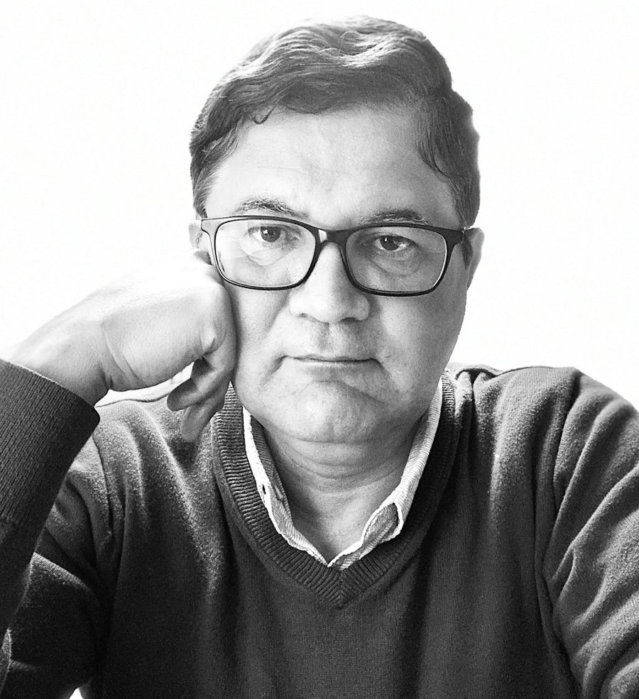

Acto I
Corrección del español
Objetivo Que el texto sea gramaticalmente impecable, claro y natural.
Qué reviso Gramática, ortografía, puntuación, estilo, registro y coherencia textual.
Los modelos generan texto a velocidad industrial. Yo reviso lo que dicen: corrección del español, coherencia del razonamiento y adecuación ética y cultural. Evaluación humana para inteligencia artificial, con criterios explícitos.
Cómo evalúoIA sin revisión
IA con evaluación humana

Vivimos la peste del chatbot genérico. Una plaga de IA insípida que promete eficiencia pero solo entrega mediocridad. Estas herramientas no piensan; imitan. Son espejos que reflejan la vacuidad de internet, no la profundidad de su empresa.
El error es de categoría: confundir fluidez con corrección. Un modelo puede producir párrafos elegantes, pero eso no garantiza que lo que dice esté bien dicho, bien razonado o bien juzgado.
«La fluidez de un modelo no prueba su corrección: hace falta juicio humano para distinguir lo que suena bien de lo que está bien.»
Ese juicio no sale de una API. Sale de décadas de lengua, lógica y ética aplicadas al texto: detectar el error de sentido que pasa desapercibido, la falacia elegante, el sesgo cultural que el modelo no ve.
Mi vida profesional ha sido un entrenamiento para esto. Como Doctor en Filosofía, disecciono sistemas de racionalidad. Como editor, estructuro el pensamiento. Como desarrollador, lo encarno en código. No soy un híbrido; soy la síntesis necesaria para esta nueva era.
Mi enfoque es el español, la lógica y la ética aplicados a la evaluación de respuestas de inteligencia artificial. Soy doctor en Filosofía por la Universidad de Navarra, profesor universitario, editor y académico de la Academia Guatemalteca de la Lengua. Dirijo Editorial Arjé. Reviso la corrección del español, la claridad de la redacción y la coherencia de los argumentos; detecto errores de sentido y razonamiento, y evalúo respuestas con criterios explícitos. Busco proyectos remotos de revisión, evaluación y anotación de contenido en español. Como actividad complementaria, ofrezco tutorías individuales de automatización con IA para pequeños negocios y emprendedores de Guatemala. He creado aproximadamente 1,800 aplicaciones con IA: esa práctica respalda mi conocimiento de las posibilidades y limitaciones de los modelos, pero mi perfil principal es la evaluación lingüística y del razonamiento.
Cada respuesta se revisa en tres niveles. Ninguno es opcional: un texto correcto puede ser ilógico, y un argumento sólido puede ser indebido.
Acto I
Objetivo Que el texto sea gramaticalmente impecable, claro y natural.
Qué reviso Gramática, ortografía, puntuación, estilo, registro y coherencia textual.
Acto II
Objetivo Que el argumento se sostenga.
Qué reviso Errores de lógica, falacias, contradicciones, afirmaciones sin fundamento y errores de sentido.
Acto III
Objetivo Que la respuesta sea adecuada para el mundo hispanohablante.
Qué reviso Sesgos, adecuación cultural y juicio de valor, con criterios explícitos.
Conozco los modelos desde la práctica, no solo desde la teoría. Estas herramientas que construí con IA muestran cómo trabajo con ellas, y dónde fallan.
Un ejercicio de construcción de identidad. Se diseñó una Persona Digital ('El Oráculo Ni Magia Ni Método') basada en la filosofía de la racionalidad barroca y el pensamiento abductivo para actuar como un estratega intelectual. No es un asistente; es un pensador.
Las escuelas de negocios producen excelentes analistas y peores estrategas. Enseñan métodos, no mentalidades. El resultado son gerentes que pueden optimizar un sistema conocido, pero se paralizan ante lo desconocido. Son soldados de manual en una guerra de guerrillas.
El Pórtico Lógico no es un curso. Es un entorno de simulación para la mente, un dojo donde el juicio se forja a través del combate intelectual. Un 'sparring partner' digital diseñado bajo los principios de la Racionalidad Inventiva, que obliga al participante a abandonar los atajos mentales y a construir decisiones desde primeros principios.
No producimos mejores estudiantes. Forjamos estrategas anfibios: líderes que respiran tanto en el océano de los datos como en el aire de la ambigüedad. Graduados que una empresa no puede permitirse no contratar.
El liderazgo moderno está esquizofrénico. Se le exige ser 'data-driven' y al mismo tiempo 'visionario'. Se debate entre la rigidez del algoritmo y la nebulosa de la 'intuición'. La mayoría de los líderes se ahogan intentando nadar en uno de los dos extremos.
Esta no es una infografía. Es la arquitectura visual de un nuevo sistema operativo mental: la Racionalidad Inventiva. Un manifiesto gráfico que decodifica cómo la intuición profunda y el diseño consciente no son opuestos, sino dos fases del mismo ciclo de creación de valor. Es el mapa para el líder que debe operar entre el rigor matemático y el ingenio poético.
Quien comprende esta cartografía deja de ser víctima de la complejidad. Empieza a utilizarla como arma. Esta pieza no 'explica' una mentalidad; la instala.
Busco proyectos remotos de revisión, evaluación y anotación de contenido en español. Si su equipo trabaja en evaluación de IA y necesita un corrector de lengua con formación filosófica, escríbame.